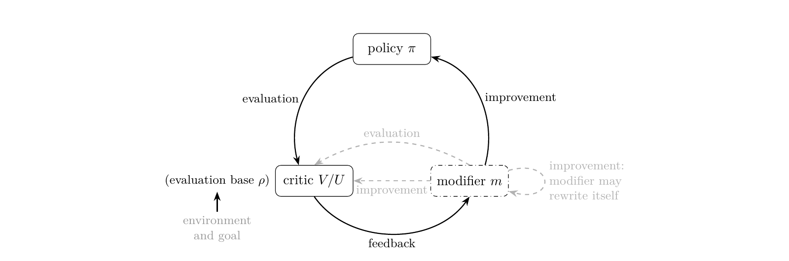

对于变化世界产生的新数据，大模型应该如何持续从数据中进行学习？是通过朴素的后训练微调，通过 in-context learning，还是 in-parameter learning？
这篇短文对四种让模型利用上下文 （一段长文档、一段交互历史、或是任意可学习的数据形式）的方式进行一个快速、清晰的比较：把 表示成 prompt（ICL）、全量参数（逐上下文 SFT）、低秩参数（逐上下文 LoRA SFT），或用超网络一次前向生成低秩参数（SHINE [1] 这类 in-parameter learning）。重点不是谁更好，而是 被表示成什么、如何产生、代价是什么。此外，文章末尾会额外讨论 update by inference，以及 in-parameter learning 的代表性工作 SHINE 在 Generalized Agent Iteration 框架下是否属于 RSI 的判别。
ICL 把上下文留在 token 里，SFT 把它优化进权重，LoRA 把它压进低秩子空间，SHINE 则用一次前向把它生成出来。四者不是替代关系，而是上下文的四种表示。
1. 问题设定：一批上下文，四种表示
给定 篇文档 ，每篇文档带一组问题 。目标都是利用 回答 ；区别在于 被表示成什么：
- ICL：把 表示成 prompt / KV cache；
- 逐上下文全参数 SFT：把 表示成全量参数 ；
- 逐上下文 LoRA SFT：把 表示成低秩参数 ；
- SHINE：用共享生成器 把 表示成生成的低秩参数 。
此外，把所有训练文档混在一起训练一个 的全局 SFT 作为参照：它看不到测试文档，只用于说明“一个模型服务所有文档”的极限。
这里需要区分两个轴：参数化（全参数 vs LoRA）与 scope（全局 vs 逐上下文）。混在一起会让后面的比较失真。
| 参数化 \ scope | 全局：一个更新服务所有 | 逐上下文：每个 一个更新 |
|---|---|---|
| 全参数 | global full SFT：一个 混训所有文档 | per-context full SFT：每篇文档解一个 （容量上界，仅作参照） |
| LoRA | global LoRA SFT：一个 LoRA 混训所有文档 | per-context LoRA SFT：每篇文档现场优化一个 adapter SHINE：每篇文档生成一个 adapter，不做梯度 |
读法：按行看参数化，按列看 scope。SHINE 不是单独的第三行——它和 per-context LoRA SFT 同在右下角一格，都是“每篇文档一个 LoRA”，区别只在 adapter 是优化出来的（SFT）还是由生成器一次前向产生（SHINE）。ICL 放在表外：它不做权重更新， 留在 prompt / KV cache 里。
评估时，文档分成训练集和测试集；测试文档不参与 SHINE 的元训练，也不参与全局 SFT 的训练。逐上下文 SFT 类方法在 support set 上优化，所有方法在 held-out queries 上评估。ICL 把测试文档放进 prompt；SHINE 只为测试文档生成 LoRA、不做梯度；全局 SFT 看不到测试文档，只作为参照。这里的关键不是“谁分数高”，而是这些方法在测试时能不能看到新文档、是否在新文档上优化。
2. ICL vs. SFT vs. IPL
| 维度 | ICL | 逐上下文全参数 SFT | 逐上下文 LoRA SFT | SHINE |
|---|---|---|---|---|
| 上下文表示 | token / KV cache | 全量参数 | 每篇文档的 LoRA | 生成的每篇文档 LoRA |
| 如何产生 | prefill | 逐上下文优化 | 逐上下文优化 | 一次前向生成 |
| 测试时看到新文档 | 是 | 是（support） | 是（support） | 是（generator 输入） |
| 测试时优化 | 否 | 是 | 是 | 否 |
| 主要误差 | 上下文窗口 / 延迟 | 过拟合 / 高方差 | rank gap / 过拟合 | amortization gap / OOD |
表中没有列全局 SFT；它看不到测试文档，只作为参照。逐上下文全参数 SFT 是容量（训练损失）上界，不是泛化上界，实践中也很少逐文档做；论文的实际 baseline 是逐上下文 LoRA SFT：每篇文档现场优化一个 rank-8 LoRA；它和 SHINE 一样，都是“每篇文档一个 adapter”，区别在于 adapter 是优化出来的，还是一次前向生成的。
这条路线并不是从 SHINE 开始的：Generative Adapter [2] 已经用一次前向把 context 写进 adapter，只是覆盖范围和生成器结构不同；SHINE 的主要变化是 full-layer + M2P + 更大规模元训练。
2.1 形式化比较
设 是冻结基座， 是全参数空间， 是 rank- 的 LoRA 更新空间， 是概念性的目标损失。为简洁，下面的公式不区分训练/测试文档，也不区分 support / held-out；实际评估按上一节的设定。
ICL 没有权重更新，它直接条件在 上：
全局 SFT 用一个更新服务所有训练文档：
逐上下文 SFT 为每篇文档解一个 argmin：
SHINE 学一个生成器，把每篇文档映射成一个更新：
这些做法的区别可以压缩成一句话：
全局 SFT 是“一个 min 管所有文档”；逐上下文 SFT 是“每篇文档一个 min”；SHINE 是“一个 min over ，里面套着每篇文档的 ”；ICL 在适配阶段没有 min， 留在输入里。
2.2 两个 gap
对逐上下文方法，可以写出一个三层不等式：
左边是全参数 SFT 的逐上下文最优（oracle），中间是逐上下文 LoRA SFT，右边是 SHINE。全局 SFT 不在这条不等式里：它把所有训练文档混在一起训练一个 ，目标是 ；它的优势是一个模型服务所有文档，存储/部署简单；劣势是文档之间会冲突。两个 gap：
- rank gap：全参数 → 低秩 LoRA，损失的是参数容量；
- amortization gap：逐上下文优化 → 一次前向生成，损失的是逐上下文最优性。
本文说的“一次前向的代价”，指的就是第二个 gap。
SHINE 论文把生成 LoRA 的 rank 固定为 8，逐上下文 LoRA SFT baseline 也是 rank 8，所以它主要在研究第二个 gap：同样的低秩容量，优化出来的更新 vs 生成出来的更新。
几何上，固定 时，SHINE 的解被限制在 这个子流形上，而不是整个 LoRA 空间，其中 是生成器面对的文档空间。Yang et al. [3] 在 NeurIPS 2026 的几何研究里观察到：生成 LoRA 谱高度集中、彼此强对齐；逐上下文 LoRA SFT 则更弥散、近乎正交。
换句话说：
SHINE 并不在自由的 LoRA 空间里找解，而是在由生成器定义的低维解空间里找解。
2.3 几何差异的含义
谱集中 + 强对齐 意味着：
- 不同文档生成的 LoRA 共享一组主要方向；
- 更新的有效秩较低，结构更紧凑；
- 生成器学到的是一种“文档 → 更新”的共享低维结构。
谱弥散 + 近乎正交 意味着：
- 每篇文档的逐上下文 LoRA SFT 更新更独立；
- 更新方向铺得更开，有效自由度更高；
- 每篇文档可以更贴近自己的最优解。
这是一种 bias-variance / 容量与特异性 的 trade-off，而非“SHINE 更结构化，所以更好”；具体适用边界在第 3 节展开。
对齐的代价是共享子空间可能争用；弥散的代价是更难压缩、更难共享结构。这也说明，SHINE 的瓶颈不只是 rank-8 的容量，还有生成器 image 的覆盖范围：如果某篇文档的最优更新落在 image 之外，一次前向再快也到不了。
3. When may ICL, SFT or IPL work better?
上面的形式化比较给了两个判断维度：测试时能不能看到 、是否允许在测试上下文上优化；对参数方法，再看解空间是自由的 LoRA 空间，还是被生成器约束的 image。把这两个维度和几何差异放在一起，可以得到一个粗略的适用边界。
ICL 更容易占优，当：
- context 能放进窗口，查询次数不多，或者需要精确引用、可审计；
- 任务要求强 OOD、长尾事实、上下文频繁变化；
- 不想维护每个上下文的 adapter。
它的代价是 prefill / KV cache，以及长上下文里的 lost-in-the-middle。
逐上下文 SFT 更容易占优，当：
- 每个上下文有足够的 support 数据，可以做几十到几百步优化；
- 上下文之间差异大，最优更新方向不共享；
- 需要把单个上下文拟合到很高的精度。
它的代价是逐上下文优化成本、存储 N 个更新（full SFT 尤其重），以及小数据下的方差和过拟合。
IPL / SHINE 更容易占优，当：
- 上下文数量多、重复查询多，生成 adapter 的固定成本可以被摊薄；
- 上下文之间共享结构强，每个上下文的 support 数据少；
- 可以接受一次前向的 amortization gap，换取统一生成器和低延迟。
它的风险是生成器 image 覆盖不到 OOD 或独特的更新，以及低秩 bottleneck 对精确召回的限制。
全局 SFT 则适合另一种场景：所有上下文共享同一套知识或行为，且希望只部署一个模型；如果上下文之间冲突大，它会用平均损失牺牲单个上下文的效果。
这不是谁替代谁，而是几种失败模式的对调：ICL 怕 context 太长，逐上下文 SFT 怕每个上下文的数据太少或优化太贵，IPL 怕生成器没覆盖到。几何上的“谱集中 / 对齐 vs 弥散 / 正交”正是这个 trade-off 的一个经验指纹。
4. 结论
SHINE 是一个 learned compiler / amortized optimizer。它把逐上下文的优化问题变成了跨文档的函数学习问题，用 amortization gap 换取一次前向。它适合多文档、重复查询、稳定语料；不适合一次性、强 OOD、精确召回、长程过程性任务。
ICL、逐上下文全参数 SFT、逐上下文 LoRA SFT、SHINE 不是替代关系，而是四种上下文表示。SHINE 不是逐上下文 SFT 的替代品，而是“把上下文编译成参数”这条谱系上的一个摊销点。
5. 额外讨论
5.1 Update by Inference: 和 TIPL 的相似性
TIPL [4]（Tang, 2025）把 RL 策略网络的训练过程看成一条权重轨迹：把历史策略权重序列喂给 causal Transformer，自回归预测下一组策略权重；推理时用前向预测代替迭代梯度更新。它和 SHINE 在抽象层面很像：都把“优化”学成了一个前向函数，把每次现算的梯度更新摊销到离线训练里。

图 1：TIPL 将策略权重轨迹作为序列，用 causal Transformer 自回归预测下一组权重（Tang, 2025）。
但两者优化的对象和条件不同：
- TIPL 的条件是权重历史，输出是完整策略权重，训练信号是 next-weight MSE；它更像一个 weight-space dynamics model / learned optimizer。
- SHINE 的条件是文本 context，输出是低秩 LoRA，训练信号是 reconstruction / QA loss；它更像一个 context-to-parameter compiler。
- TIPL 是自回归多步预测，SHINE 是一次前向生成一个 adapter。
所以，相似性在“前向代替梯度”这一层；差别在“从什么条件、生成什么参数、用什么信号训练”。TIPL 学的是优化轨迹，SHINE 学的是上下文到参数的映射。
5.2 在 GAI 框架下看 SHINE
GAI [5]（Tang et al., 2026）把系统拆成 ： 是策略， 是 action critic， 是 modifier（提出系统如何改变）， 是 modification critic， 是评估基准；agent 是系统里可修改的部分。它用两个 dial 区分不同的迭代系统：
- Dial 1：modifier 是否在 agent 内？如果 ，改进机制固定在 agent 外，系统是 fixed outer loop / GPI；如果 ，系统可以改写自己的 modifier，才进入 RSI。
- Dial 2：评估基准 是否由外部世界锚定？如果 外部锚定，系统是 Anchored；如果 也被 agent 改写，则进入 Goal Drift 或 Fully Self-Referential。

图 2：GAI 的 policy / critic / modifier 循环；modifier 固定在 agent 外时退化为 GPI，modifier 在 agent 内时是 RSI（Tang et al., 2026）。
把 SHINE 放进去：
- ：带生成 LoRA 的基座 LLM；
- 的一个 substrate：SHINE 超网络（context → LoRA update），训练后固定；
- ：部署时没有 modification critic；SHINE 是开环生成，训练时的 reconstruction / QA loss 只用于离线学习；
- ：reconstruction / QA 目标与 held-out 数据，外部锚定；
- ：生成的 adapter（ 由冻结基座 + adapter 实现）；。
把这两个 dial 应用到 SHINE：Dial 1 里， 是训练后固定的超网络，，所以它是 fixed outer loop / GPI，不是 RSI；Dial 2 里， 是外部 QA/reconstruction 目标，所以是 Anchored。合起来，SHINE 是 Anchored GPI（fixed outer loop），对应 Table 3 的 “fixed outer loops” 类。它改变 agent 的 adapter，但不改变 modifier 本身——GAI 的第一个 dial 问的是 是否可修改，不是 agent 的权重是否变化。
更细一点：在这个意义上，SHINE 学的确实是一个 optimizer——一个 context-conditioned、amortized 的参数更新规则；但它不是“完整的 modifier”，而是 modifier 的参数更新组件。GAI 的 modifier 可以是一个 pipeline（task proposer、experience store、trainer、schedule）；SHINE 只实现了其中的 context → parameter update 这一段。作为一个已训练好的模块，它不决定学什么、何时更新、如何评估。
如果哪天 SHINE 的超网络本身也根据 agent 的经验和评估在线更新（），那它才可能进入 Anchored RSI 的讨论；当前版本的 SHINE 不是。
6. 参考文献
[1] Yewei Liu, Xiyuan Wang, Yansheng Mao, Yoav Gelberg, Haggai Maron, and Muhan Zhang.
SHINE: A Scalable In-Context Hypernetwork for Mapping Context to LoRA in a Single Pass.
ICML 2026. arXiv:2602.06358
[2] Tong Chen, Hao Fang, Patrick Xia, Xiaodong Liu, Benjamin Van Durme, Luke Zettlemoyer, Jianfeng Gao, and Hao Cheng.
Generative Adapter: Contextualizing Language Models in Parameters with A Single Forward Pass.
ICLR 2025. arXiv:2411.05877
[3] Yanlai Yang, Minki Kang, Divyam Madaan, Sung Ju Hwang, and Mengye Ren.
On the Geometry and Latent-Space Composition of Hypernetwork-Generated LoRAs.
NeurIPS 2026. NeurIPS
[4] Hongyao Tang.
Can We Optimize Deep RL Policy Weights as Trajectory Modeling?
ICLR 2025 WSL. arXiv:2503.04074
[5] Hongyao Tang, Yi Ma, Pengyi Li, and Yifu Yuan.
Generalized Agent Iteration: One Formal Framework for Iterative Policy Improvement and Recursive Self-Improvement.
arXiv 2026. arXiv:2609.13406